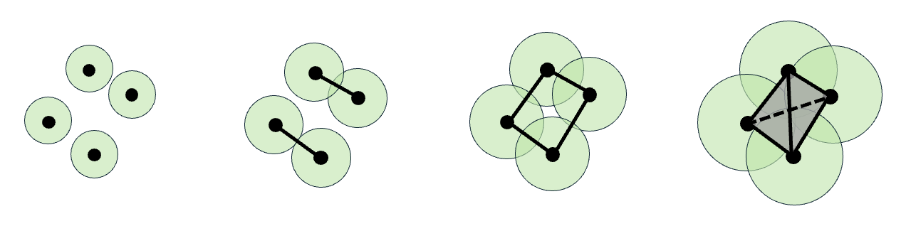

CS 410/510: Topological Methods in Data Analysis and Machine Learning
Course information:
- Term: Spring 2025
- CRN: 35831/35842
- Time: 1600-1720 Tu/Th
- Room: Friendly 106
- Prereq: CS315 (Intermediate Algorithms) OR MATH341 (Elementary Linear Algebra) OR instructor approval
Instructor:
- Name: Tao Hou
- Office: 333 Deschutes Hall
- Email: taohou at uoregon dot edu
- Office Hours: Mon/Wed 2:45pm-3:45pm
Textbook
- Baris Coskunuzer and Cüneyt Gürcan Akçora. Topological Methods in Machine Learning: A Tutorial for Practitioners
Topics and Slides:
(* An up-to-date schedule is maintained on Canvas)
(* Slides may be updated
as teaching progresses)
- 0. Run-time analysis (review)
- 1. Divide and conquer
- 2. Greedy algorithms
- 3. Dynamic programming
- 4. Elementary graph theory
- 5. Shortest path algorithms (
floyd-warshall) 6. Minimum spanning trees- 7. NP-completeness (theory, reductions)
(* Some of the slides are adapted from those made available by Antonio Carzaniga. I also got some of the slides from my previous colleague Iyad Kanj. ---- Big thanks to them!)